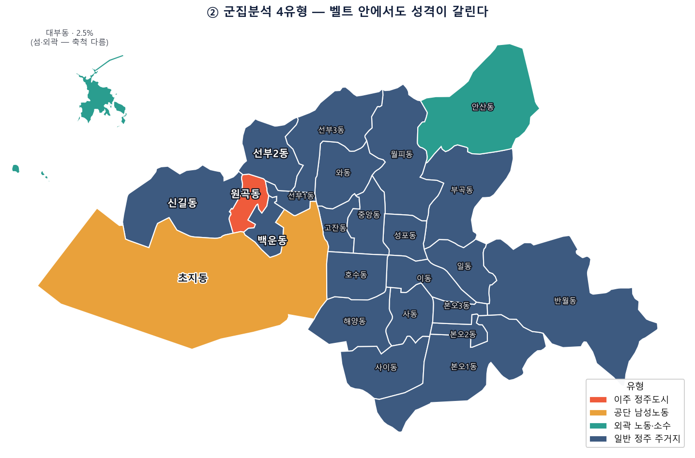

01 / 프로젝트
0
진행 · 완료
02 / 연구원
0
활동 인원
03 / 지도교수
0
전임교원
04 / 문제
∞
해결할 과제
Mission
직관이 아닌, 데이터와 수학으로
직관이 아닌, 데이터와 수학으로
세상을 다시 본다.
우리는 작은 관찰에서 시작합니다. 그 관찰을 정의 가능한 문제로 옮기고, 데이터로 검증하고, 모델로 해답을 제안합니다.

발행 · 2026.07
Get Involved
지금 바로,
지금 바로,
시작하세요.
산학협력 파트너십 문의나 연구원 지원 모두 환영합니다.
작은 첫 걸음이 세상을 바꾸는 시작입니다.